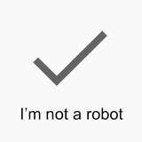
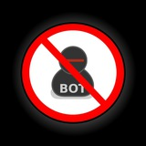
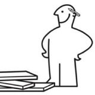

输入关键词，立即从 76 个机器人中筛选
EDITOR'S PICKS
从这些开始
每个高频场景，只保留一个值得信赖的选择。
MOST USED
热门机器人
按 Telegram 公开月活排序，官方账号不计入榜单。
- 01 GPT-4 Telegram Bot@GPT4Telegrambot 508.8 万/月
- 02 SaveAsBot@SaveAsBot 407.0 万/月
- 03 ChatGPT Unlim Bot@gpt3_unlim_chatbot 270.6 万/月
-
04
 Channel Help@chelpbot
257.2 万/月
Channel Help@chelpbot
257.2 万/月
-
05
 Post Bot@postbot
245.0 万/月
Post Bot@postbot
245.0 万/月
- 06 Group Help@GroupHelpBot 236.0 万/月
- 07 Rose@MissRose_bot 233.9 万/月
-
08
 Quiz Bot ✓@quizbot
162.8 万/月
Quiz Bot ✓@quizbot
162.8 万/月
- 09 Crypto Bot@cryptobot 123.7 万/月
-
10
 SOSO搜搜@soso
116.7 万/月
SOSO搜搜@soso
116.7 万/月
EXPLORE BY NEED
按场景探索
不用读完一张长表，直接前往你的使用场景。
官方账号
Telegram 官方维护的建号、会员、贴纸、蓝标认证、解封申诉与客户端分发入口
官方 Bot
Spam Info Bot ✓
查询账号受限原因、提交解封申诉与举报垃圾信息
BotFather ✓
创建机器人、配置命令菜单与签发 API Token
Premium Bot ✓
开通或赠送 Premium 会员（解锁双倍限额、4GB 上传与专属星标）
Stickers Bot ✓
创建、导入自定义贴纸包并查看使用统计
Verify Bot ✓
公共频道、群组与机器人的官方蓝标认证申请入口
Walt (ex. Wallet) ✓
Walt（原 Wallet）加密钱包入口，支持 USDT、黄金与 BTC 买卖转账；账号已更名且未公开月活，接入前请核对运营方
搜索发现
按关键词检索中文群组、频道、影视、网盘与音视频资源
SOSO搜搜
按关键词检索中文群组、频道与音视频资源
超级索引
多维度检索中文群组、频道与媒体文件
神马搜索
按关键词检索关联群组、频道与细分兴趣社区
极搜中文搜索
跨群组、频道、影视、音乐与新闻的综合中文检索
Searchee Bot
跨频道全文检索，按关键词定位公开频道与内容
Video Search for YouTube
在聊天框内直接检索并分享 YouTube 视频
Telemetrio
核实频道真实数据与增长曲线，识别刷量账号
TGStat Bot
查询任意频道、群组的订阅量与发帖统计
一起搜电影
检索电影与剧集资源，支持挂载至群聊内直接调用
搜啦资源搜索机器人
按关键词检索中文群组与频道公开内容
狗狗索引 - 搜索神器
中文检索频道、群组与机器人，可挂载群内调用
aiso中文搜索
发送关键词直接匹配公开群组与频道内容
加密交易
内建支付钱包与链上代币买卖；接入前用小额资金测试滑点与提现，并确认授权范围
群组管理
拦截水军、外链广告与高频刷屏；中大型群组建议搭配「1 个进群验证 + 1 个广告拦截」组合使用
进群验证
Group Help
英文界面综合群管，支持滑动/算术入群验证、自动禁言与日志审计；拉群后请核对实际入群账号，第三方实测曾拉入 GHClone1Bot 克隆号
Shieldy
老牌轻量入群验证，超时未验证自动移出

约 16.8 万/月自訂型入群驗證
自定义题库入群验证，中文界面并可维护全局黑名单
OrgRobot
新成员入群身份核验与准入考核
Telegram Watchdog
开源反机器人入群验证，按行为特征拦截批量注册号

约 1.8 万/月The Join Captcha Bot
全自动入群验证码，超时未验证自动移出群组
入群验证机器人
简洁中文图形验证码，开源且支持自建部署
广告拦截
活跃统计
解析下载
提取主流社媒与视频平台无水印内容，支持私聊发送链接或挂载至群内解析
SaveAsBot
提取 Instagram、TikTok、Pinterest 与 Twitter/X 高清图文与无水印视频
Music Downloader
跨平台音乐搜索与提取，支持按歌名或 Spotify/YouTube 链接下载 320kbps MP3
InstaSave: Instagram & TikTok Downloader
解析下载 Instagram、TikTok、X、Facebook 与 Pinterest 图文视频
YoutubeDL - YouTube Download Bot
按分辨率提取并下载 YouTube 视频与音频
AI 助手
多模型聚合对话与代码问答；第三方 AI 账号迭代极快，普遍设有免费提问条数或频道订阅门槛，接入前先核实运营方与授权范围
多语翻译
私聊双向互译与群聊消息实时自动转译，适合多语种社群与跨国协作
签到打卡
群内每日打卡、连续天数统计与考勤汇总，量化社群活跃度与团队出勤
频道推送
富媒体排版、定时发布队列、跨频道转发与评论/回应按钮，适合频道主日常运营
Channel Help
频道定时排版、互动数据统计与抽奖管理
Post Bot
编辑含内联按钮的富媒体图文并发布至频道
Livegram Bot
免代码搭建双向反馈机器人，解决账号无法主动私聊的问题
LikeBot
为频道帖子批量生成表情回应按钮
TelepostBot
频道图文排版、定时发布队列与浏览数据统计
Controller Bot
频道富文本排版、内联按钮与发帖数据统计
DiscussBot ✓
为频道全部帖子自动挂载评论按钮，打通讨论组
游戏娱乐
群内实时抢答、棋牌对战、HTML5 小游戏与文字冒险，无需跳出聊天窗口即可发起互动
实用工具
拍卖提醒、跨格式文件转换、一次性临时邮箱、直链转存、PDF 处理与 RSS 订阅工具
Fragment Auction Alerts ✓
Fragment 拍卖提醒，追踪用户名与礼物成交价
File Converter
图片、音频、文档的跨格式转换，直接回传转换结果
DropMail.me
生成一次性临时邮箱，在对话内直接接收注册验证码
URL Uploader
把 URL 直链直接转存为 Telegram 文件，单文件上限 500MB
PDF Bot
PDF 瑞士军刀，支持在聊天中合并、拆分、提取文本、加水印与文件转换
Skeddy
自然语言定时提醒助手，支持用口语化输入设定待办日程并准时推送
Voice to Text
语音与视频消息转文字，支持多语种转写
Feed Reader
老牌多平台信息流订阅器，监控 RSS/Atom、YouTube 频道与播客更新

—flowerss
高口碑开源 RSS 订阅机器人，支持 Telegraph 页面即时预览排版与 OPML 导入
没有找到匹配的机器人
试试更短的关键词，或切换到其他分类。